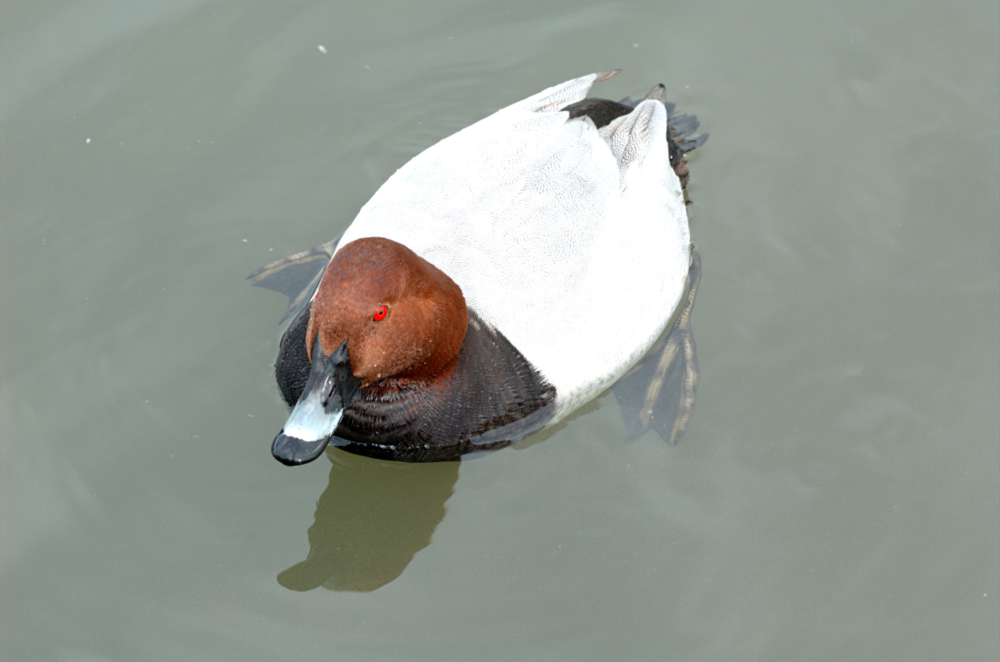

Aythya ferina — a diving duck between migration, wintering and local breeding
Name and identity
The Common Pochard Aythya ferina belongs to the family Anatidae and order Anseriformes. It is a diving duck, not simply a red-headed version of a surface-feeding duck. KuwaitBirds documents the Arabic name “al-batt kastana’i al-ra’s”; the Lebanese Ministry of Environment guide also records “batt hamrawi” and “wans”. These names belong to documented regional contexts rather than a single vernacular shared across the Arab world.
How to recognise it
A male in distinctive plumage has a chestnut head and neck, black breast, pale grey body and red eye. Its sloping forehead merges into a relatively long bill, with a blue-grey central area between dark base and tip. It lacks the male Tufted Duck’s crest, and its grey body differs from that species’ black-and-white contrast.
The female is grey-brown, paler on the cheek and chin, and much less contrasting. Juveniles resemble females, with less grey vermiculation on the back. A male in post-breeding eclipse plumage can also look more female-like; head colour alone therefore cannot reliably establish sex or age. In flight the pale grey wing bar is subdued. The male Red-crested Pochard Netta rufina instead has a larger orange head and red bill: these two species should not be identified as one.
Habitat, food and behaviour
It uses lakes, marshes, reservoirs and ponds with aquatic vegetation, requiring areas suitable for diving. Artificial lakes and treatment ponds can provide habitat when conditions are appropriate, but water alone does not guarantee habitat quality. Its food includes aquatic plants, seeds and small invertebrates, with proportions varying between sites and seasons.
Often seen in groups, it may associate with other ducks. Resting flocks do not mean that a site is unimportant: research in Algeria’s Guerbes–Sanhadja wetlands found that diving ducks also used the site for daytime resting, sleeping and preening. Quiet resting places complement feeding areas; disturbance to either can reduce the value of the wider wetland.
Distribution and Arab-country occurrence
Its range extends across Europe and Asia, with some populations moving to warmer wintering regions, including North Africa and the Middle East. Its African wintering range includes Morocco, Algeria, Tunisia, Egypt and Sudan. A range map does not, however, mean that every site within those countries regularly holds similar numbers.
In Morocco, passage and wintering overlap with local breeding; a recent study documented residency and regular nesting at Merja Fouwarate. In Lebanon it is uncommon on passage in October–November, rarer in March–April, and a scarce winter visitor. Kuwait’s official list describes scarce passage and winter occurrence. The Birds of Oman database instead calls it a fairly common winter visitor, an important contrast with Kuwait. UAE reports document locally concentrated winter presence, sometimes more numerous on particular lakes. These differences do not justify treating it as resident or breeding across the Gulf.
Breeding and life cycle
Nesting is associated with vegetation near water that conceals the female and clutch. She usually lays eight to ten eggs and incubates them for about twenty-five days. Downy chicks are mobile soon after hatching and typically become capable of flight after roughly fifty to fifty-five days. These are typical values, not a fixed timetable for every country or nest. Ducklings accompanying a female provide stronger breeding evidence than adult ducks merely remaining through summer.
Why late October matters
Late October falls within the documented autumn passage in Lebanon and may coincide with growing arrivals at wintering sites. Monitoring at Morocco’s Fouwarate found autumn and winter increases on top of local presence. This does not establish a regional arrival date or make late October a universal peak. Record location, date, count and apparent sex, distinguishing direct observations from assumptions about the birds’ origins.
Conservation and responsible observation
Its global status is Vulnerable (VU), not Least Concern simply because large flocks occur on some lakes. Pressures include wetland loss and degradation, hunting, pollution and lead poisoning from ingested ammunition. Protecting water, vegetation and resting areas are interconnected measures. Use binoculars at a distance that does not force birds to dive away or take flight; do not chase them to check wing markings or obtain a photograph.
References
BirdLife International, Common Pochard, 2024; BTO BirdFacts; RSPB; Naturalis, Birds of Europe; Field Guide to the Birds of Oman; KuwaitBirds and Official Kuwait Bird List; Lebanese Ministry of Environment guide and updated Lebanon bird checklist; Emirates Bird Records Committee reports; Wetlands International; Lahrouz and colleagues, Zoology and Ecology, 2024; University of Souk Ahras, diving-duck study in Guerbes–Sanhadja. Information reviewed: 26 October 2026.
Photo: Gary Houston — CC0 1.0.